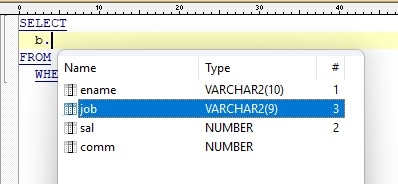
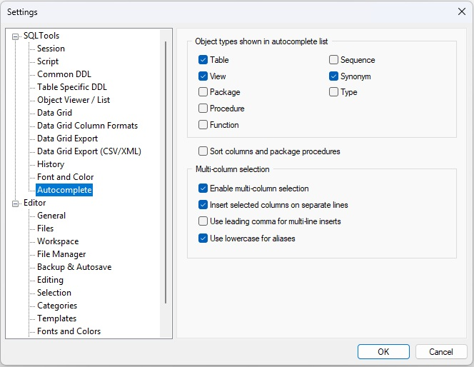

SQLTools provides an autocomplete feature to assist with writing SQL and PL/SQL code.
Press Ctrl+Shift+Space to display a list of objects belonging to the current user. You can limit which types of objects appear — for example, only tables and views — in the Autocomplete Settings.
If the cursor is placed after a schema name followed by a dot, the autocomplete list will show the objects of that schema.
If the cursor is placed after a table name or table alias followed by a dot, the autocomplete list will show the columns of that table. SQLTools includes sophisticated alias‑resolution logic (see the linked documentation).
PL/SQL packages are handled similarly: place the cursor after a package name and a dot, and the autocomplete list will show all package procedures along with their parameters.
Normally, the autocomplete list allows you to select a single item and insert it at the cursor position by pressing Enter.
However, SQLTools also supports an advanced mode for working with table and view columns. You can select multiple columns in the desired order using Space, Ins, or Ctrl + Left Click. All selected columns will then be inserted at the cursor position. The inserted text will be formatted either as a single line or multiple lines, depending on the Autocomplete Settings.
See the example:

The SQL before (the ^ shows the cursor position):
SELECT
b.^
FROM bonus b
WHERE ...
The SQL after:
SELECT
b.ename
, b.sal
, b.job
, ^
FROM bonus b
WHERE ...
When you write SQL queries in SQLTools, the editor helps you by understanding and resolving table and subquery aliases in your SQL statements. This makes writing, navigating, and understanding complex SQL much easier.
SELECT e.name FROM employees e),
SQLTools tracks which alias refers to which table.
SELECT ... FROM schema.table aliasSELECT ... FROM table AS aliasSELECT ... FROM (SELECT ...) subquery_aliasalias.column),
SQLTools resolves which table or subquery that alias refers to.
FROM clause, such as
FROM (SELECT ...) subquery_alias.
SELECT * or SELECT alias.*), SQLTools can resolve the
underlying table name. Even if you use an alias for the subquery, the tool can often
determine which real table is being referenced.
SELECT e.name, d.department_name
FROM employees e
JOIN departments d ON e.department_id = d.id
WHERE e.salary > 1000
In this example, e and d are aliases for employees and
departments, and SQLTools resolves them automatically.
SELECT d.name
FROM (SELECT * FROM departments) d
WHERE d.department_id > 10
Here, d is an alias for the subquery, and SQLTools resolves that it refers to the
departments table.
SELECT d.name
FROM (
SELECT department_id, name
FROM departments
) d
WHERE d.department_id > 10
In this example, d is an alias for the subquery.
SQLTools can extract the column
list directly from the subquery
and understands that there is no need to retrieve the full
column list from the departments table.
Available from the top menu: Tools → Settings...
